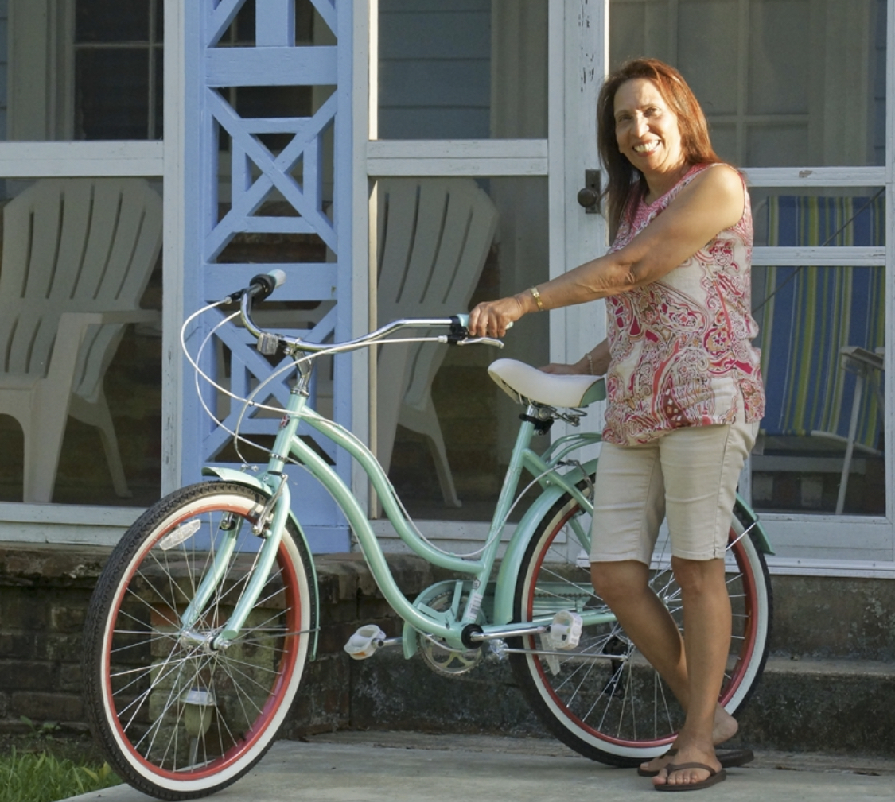

Footsteps To A Queendom A Tribute To Mom "Patrice Tryman" "A Tribute To Mom" is inspired by the Accomplishments and Accolades My Mom aquired during her journey through Life. She has reached Retirement and Enjoys a Wonderful Quality of Life In the Home She was born in on The Gulf Coast. For Her"Everyday Is Mardi Gras"!
1950 - Born in Bay St. Louis, MS 1957 - 1968 - Attended St. Rose de Lima School for the most part of her grammar and freshman years, before transferring to Valena C. Jones School. 1968 - 1969 - Moved to Montclair, NJ in May 1968, and Graduated from Montclair High School in June 1969. 1969 - Attended Essex County College to pursue accreditation in Secretarial Science. 1971 - 1975 - Worked at Montclair Drugs, Montclair NJ, as a Pharmacy Assistant, and also worked at NJ Bell, in East Orange, as a senior clerk typist. 1975 1977 - Employed at McDonald's Corporation (Regional Office), Bloomfield NJ in positions of Dictaphone Transcriber, Secretary, and Jr. Bookkeeper within the departments of purchasing, training, and accounting. 1977 - 1979 - As Executive Secretary at Nedick's Stores, Inc.,New York, NY, worked directly with vice-president, as well as district and zone managers in operations department. 1979 - After Nedick's stores closed a short term position as Administrative Assistant was held with McDonald's Owner/Operators Association, Bloomfield. NJ. Worked with president and treasurer. 1979 - 1986 - Administrative Assistant, Essex County Division of Employment Training, East Orange, NJ. Assistant to director and assistant director. 1986 - 1988 - Administrative Assistant, Mortgage Department, First Fidelity Bank, Newark, NJ. Reported to vice president of Internal Control and Compliance Unit. 1988 - 2013 - Administrative Assistant, Department of Planning & Community Development, Township of Montclair. Reported to director 2007 - 2013 - Started the project with Her Significant Other,Glenn Perry 2013 - Present - RETIRED!!! 2014 - Relocated from New Jersey to Her renovated dream home in Her hometown of Bay St. Louis. MS where She was born and raised.
"Click" on the image below of My Mom to get the full story on Her Retirement and Dream home written by a Local Journalist 